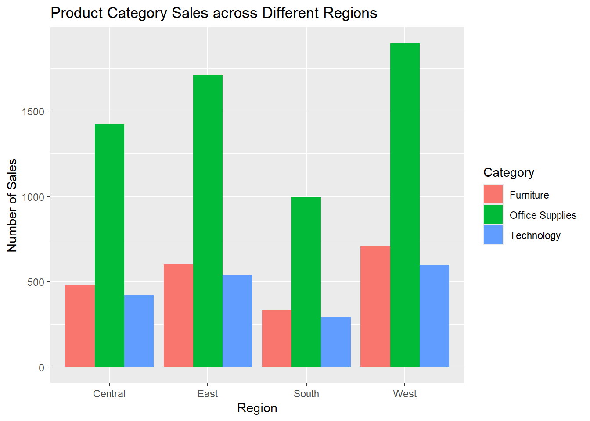
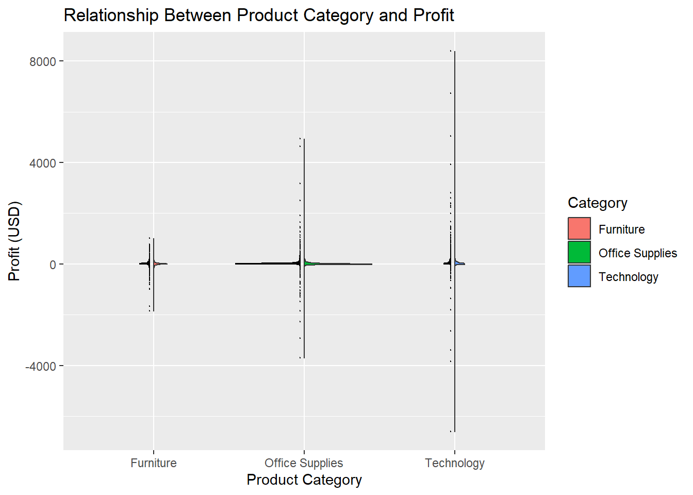
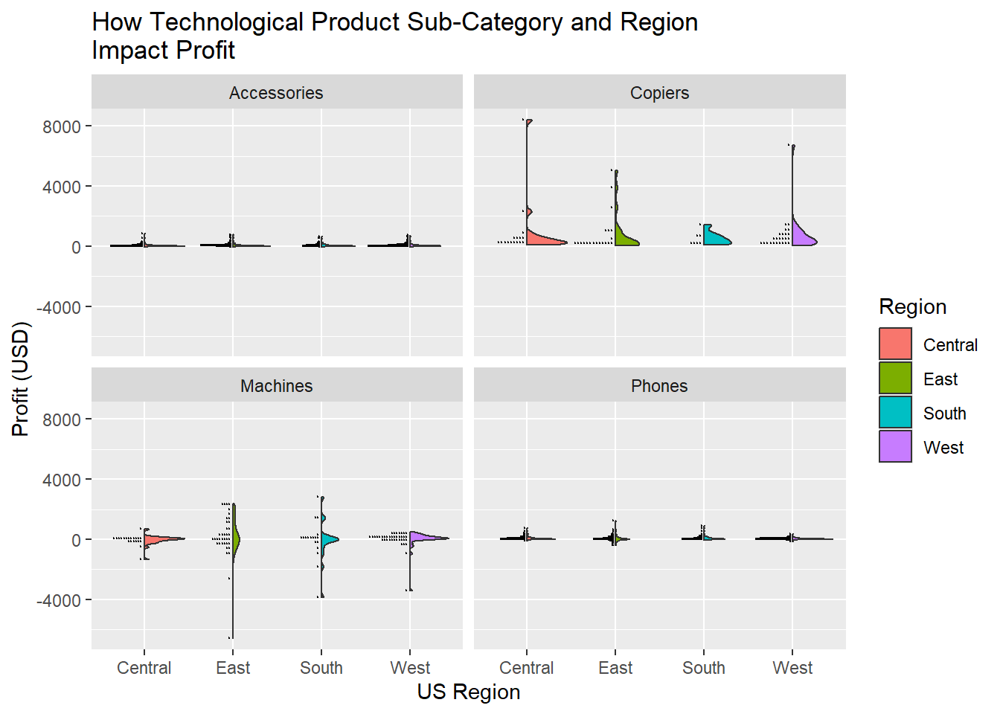
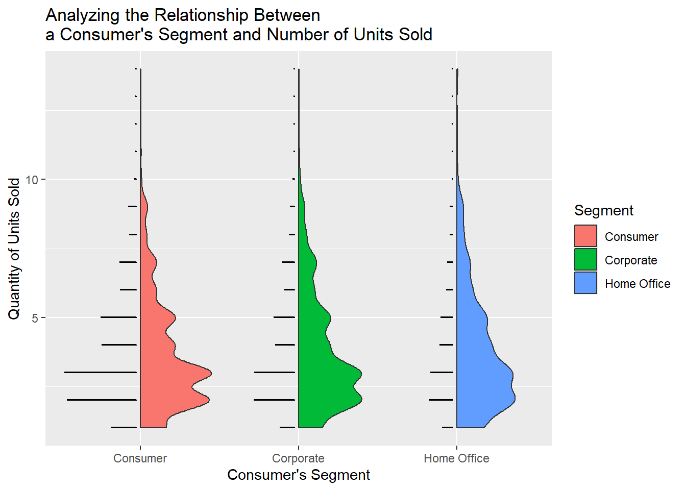
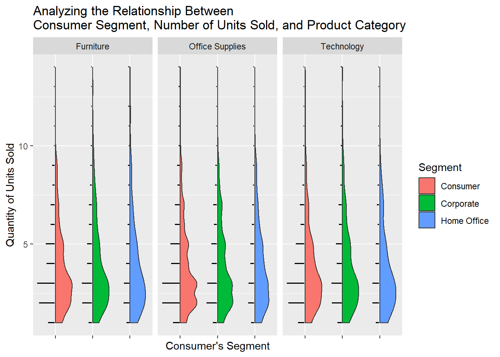
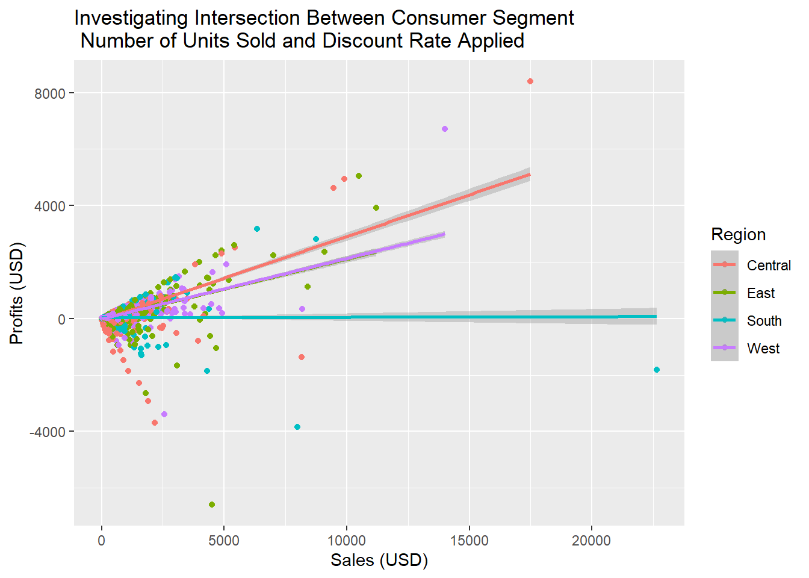
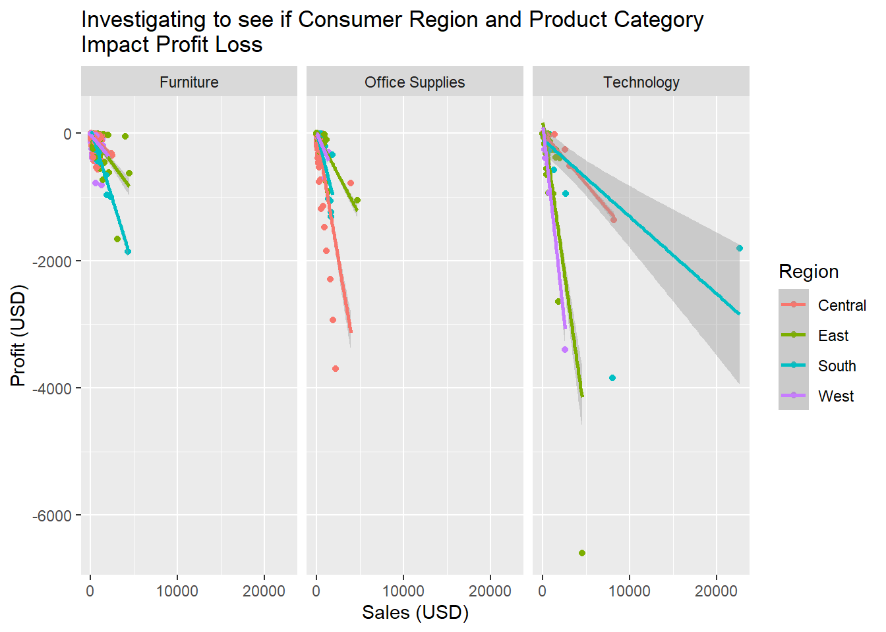

Read-in store sales data file, save as R object, and parse as needed. The dataset I’m using looks at online sales from a superstore.
# here is the initial code to read-in the store sales data and save it as an R objectstore_data <-read_excel("US Superstore data.xls")
Warning: Coercing text to numeric in L2236 / R2236C12: '05408'
Warning: Coercing text to numeric in L5276 / R5276C12: '05408'
Warning: Coercing text to numeric in L8800 / R8800C12: '05408'
Warning: Coercing text to numeric in L9148 / R9148C12: '05408'
Warning: Coercing text to numeric in L9149 / R9149C12: '05408'
Warning: Coercing text to numeric in L9150 / R9150C12: '05408'
Warning: Coercing text to numeric in L9388 / R9388C12: '05408'
Warning: Coercing text to numeric in L9389 / R9389C12: '05408'
Warning: Coercing text to numeric in L9390 / R9390C12: '05408'
Warning: Coercing text to numeric in L9391 / R9391C12: '05408'
Warning: Coercing text to numeric in L9743 / R9743C12: '05408'
# after saving, I'll print once to get an idea of how the object saved and what parsing needs to take place to perform further analysisstore_data
# A tibble: 9,994 × 21
`Row ID` `Order ID` `Order Date` `Ship Date` `Ship Mode`
<dbl> <chr> <dttm> <dttm> <chr>
1 1 CA-2016-152156 2016-11-08 00:00:00 2016-11-11 00:00:00 Second Class
2 2 CA-2016-152156 2016-11-08 00:00:00 2016-11-11 00:00:00 Second Class
3 3 CA-2016-138688 2016-06-12 00:00:00 2016-06-16 00:00:00 Second Class
4 4 US-2015-108966 2015-10-11 00:00:00 2015-10-18 00:00:00 Standard Cla…
5 5 US-2015-108966 2015-10-11 00:00:00 2015-10-18 00:00:00 Standard Cla…
6 6 CA-2014-115812 2014-06-09 00:00:00 2014-06-14 00:00:00 Standard Cla…
7 7 CA-2014-115812 2014-06-09 00:00:00 2014-06-14 00:00:00 Standard Cla…
8 8 CA-2014-115812 2014-06-09 00:00:00 2014-06-14 00:00:00 Standard Cla…
9 9 CA-2014-115812 2014-06-09 00:00:00 2014-06-14 00:00:00 Standard Cla…
10 10 CA-2014-115812 2014-06-09 00:00:00 2014-06-14 00:00:00 Standard Cla…
# ℹ 9,984 more rows
# ℹ 16 more variables: `Customer ID` <chr>, `Customer Name` <chr>,
# Segment <chr>, Country <chr>, City <chr>, State <chr>, `Postal Code` <dbl>,
# Region <chr>, `Product ID` <chr>, Category <chr>, `Sub-Category` <chr>,
# `Product Name` <chr>, Sales <dbl>, Quantity <dbl>, Discount <dbl>,
# Profit <dbl>
class(store_data)
[1] "tbl_df" "tbl" "data.frame"
# the object was initially read-in as a tibble, so I don't need to make any conversions in order to work with it in the tidyverse. Now, I'll parse the data as needed.store_data |>mutate(`Order Date`=as.Date(`Order Date`),`Ship Date`=as.Date(`Ship Date`),`Ship Mode`=as.factor(`Ship Mode`),Segment =as.factor(Segment),State =as.factor(State),`Postal Code`=as.character(`Postal Code`),Region =as.factor(Region),Category =as.factor(Category),`Sub-Category`=as.factor(`Sub-Category`) )
# A tibble: 9,994 × 21
`Row ID` `Order ID` `Order Date` `Ship Date` `Ship Mode` `Customer ID`
<dbl> <chr> <date> <date> <fct> <chr>
1 1 CA-2016-152156 2016-11-08 2016-11-11 Second Class CG-12520
2 2 CA-2016-152156 2016-11-08 2016-11-11 Second Class CG-12520
3 3 CA-2016-138688 2016-06-12 2016-06-16 Second Class DV-13045
4 4 US-2015-108966 2015-10-11 2015-10-18 Standard Class SO-20335
5 5 US-2015-108966 2015-10-11 2015-10-18 Standard Class SO-20335
6 6 CA-2014-115812 2014-06-09 2014-06-14 Standard Class BH-11710
7 7 CA-2014-115812 2014-06-09 2014-06-14 Standard Class BH-11710
8 8 CA-2014-115812 2014-06-09 2014-06-14 Standard Class BH-11710
9 9 CA-2014-115812 2014-06-09 2014-06-14 Standard Class BH-11710
10 10 CA-2014-115812 2014-06-09 2014-06-14 Standard Class BH-11710
# ℹ 9,984 more rows
# ℹ 15 more variables: `Customer Name` <chr>, Segment <fct>, Country <chr>,
# City <chr>, State <fct>, `Postal Code` <chr>, Region <fct>,
# `Product ID` <chr>, Category <fct>, `Sub-Category` <fct>,
# `Product Name` <chr>, Sales <dbl>, Quantity <dbl>, Discount <dbl>,
# Profit <dbl>
Preparing for App
In order to initially explore the data set to get an idea of what type of data I’m interested, I’m going to perform some numerical and graphical summaries of the store sales data set I’ve read-in.
Numerical Summaries
One-Way Contingency Tables
To start out, I’m going to look at some one-way contingency tables for some of the categorical data. Initially, I’ll use ‘BaseR’ to make the table.
# Since this the first step in initial data exploration, I'm going to include missing values.table(store_data$State, useNA ="always")
Alabama Arizona Arkansas
61 224 60
California Colorado Connecticut
2001 182 82
Delaware District of Columbia Florida
96 10 383
Georgia Idaho Illinois
184 21 492
Indiana Iowa Kansas
149 30 24
Kentucky Louisiana Maine
139 42 8
Maryland Massachusetts Michigan
105 135 255
Minnesota Mississippi Missouri
89 53 66
Montana Nebraska Nevada
15 38 39
New Hampshire New Jersey New Mexico
27 130 37
New York North Carolina North Dakota
1128 249 7
Ohio Oklahoma Oregon
469 66 124
Pennsylvania Rhode Island South Carolina
587 56 42
South Dakota Tennessee Texas
12 183 985
Utah Vermont Virginia
53 11 224
Washington West Virginia Wisconsin
506 4 110
Wyoming <NA>
1 0
It looks like Wyoming has the least amount of sales from this store, followed by West Virginia. The exact store these records are from is never specified, but it’s interesting to wonder which it is/ why these states might not have had as many online purchases from this store.
Next, I’ll include a one-way contingency table made using ‘tidyverse’ since that’s what I’ll use in other portions of the code.
# I'll look at the same grouping (state) as I did in the BaseR table just to make sure that I'm getting the same output with both methods moving forward. (Mising values are included by default in this method, so I don't have to worry about having to specify their inclusion.)store_data |>group_by(State) |>summarise(count =n())
# A tibble: 49 × 2
State count
<chr> <int>
1 Alabama 61
2 Arizona 224
3 Arkansas 60
4 California 2001
5 Colorado 182
6 Connecticut 82
7 Delaware 96
8 District of Columbia 10
9 Florida 383
10 Georgia 184
# ℹ 39 more rows
Even though the outputs look slightly different, the content is identical, so I’ll use the tidyverse method moving forward for continuity in the package I’m working with.
Two-Way Contingency Tables
Moving onto two-way contingency tables, I can now look at the relationship between two variables of my choosing.
For my first table, I’m interested in the relationship between category and sub category, so I can visualize that using a two-way table.
`summarise()` has regrouped the output.
ℹ Summaries were computed grouped by Category and Sub-Category.
ℹ Output is grouped by Category.
ℹ Use `summarise(.groups = "drop_last")` to silence this message.
ℹ Use `summarise(.by = c(Category, Sub-Category))` for per-operation grouping
(`?dplyr::dplyr_by`) instead.
This output also helps me to get an idea of exactly what sub-categories exist and fall into which categories without having to comb through my data set, so it’s a bonus for exploratory data purposes!
For my second two-way table, I’d like to look at the relationship between shipping method (mode) and what segment the consumer is purchasing from (consumer, business, etc)
`summarise()` has regrouped the output.
ℹ Summaries were computed grouped by Ship Mode and Segment.
ℹ Output is grouped by Ship Mode.
ℹ Use `summarise(.groups = "drop_last")` to silence this message.
ℹ Use `summarise(.by = c(Ship Mode, Segment))` for per-operation grouping
(`?dplyr::dplyr_by`) instead.
# A tibble: 12 × 3
# Groups: Ship Mode [4]
`Ship Mode` Segment count
<chr> <chr> <int>
1 First Class Consumer 769
2 First Class Corporate 485
3 First Class Home Office 284
4 Same Day Consumer 317
5 Same Day Corporate 114
6 Same Day Home Office 112
7 Second Class Consumer 1020
8 Second Class Corporate 609
9 Second Class Home Office 316
10 Standard Class Consumer 3085
11 Standard Class Corporate 1812
12 Standard Class Home Office 1071
It’s surprising to see how many consumers preferred same day delivery over corporate purchasers, which isn’t the way that I thought the data was going to break down. It’s actually made me more curious to know which store this data is from!
Numerical Summaries for Quantitative Variables at each level of categorical variables
To get an idea of the relationship between the quantitative and qualitative variables that I have, I’m going to perform a few analyses (including count, mean, median, standard deviation) of how quantitative variables behave at each level of the qualitative variables.
First, I’m going to look at the relationship between profit and region of the US.
Interestingly, it doesn’t seem like a state’s purchases coincide very much with discount rates, which could possibly be due to when consumers from that state are making purchases (e.g. some people in certain states might be more likely to buy from this company when there are sales going on than others).
Graphical Summaries
To visualize the relationship between different variables, there are several kinds of graphs that can be created.
For the first graph, I want to visualize the relationship between region of the US and category of the item purchased.
a <-ggplot(data = store_data |>drop_na(Region, Category),aes(x = Region, fill = Category))a +geom_bar(position ="dodge") +labs(x ="Region",y ="Number of Sales",title ="Product Category Sales across Different Regions") +scale_fill_discrete("Category")

It looks like office supplies dominate the sales in every region of the US which makes sense considering the longevity of products in the other two categories.
Next, I want to see if a product’s category had any impact on whether or not a profit was made on the sale.
b <-ggplot(data = store_data |>drop_na(Category, Profit),aes(x = Category, y = Profit, fill = Category))b +geom_violindot() +labs(x ="Product Category",y ="Profit (USD)",title ="Relationship Between Product Category and Profit" )

It looks like there tends to be a net profit loss in furniture, a slight net profit gain in office supplies, and a relatively even split in technology although it’s difficult to see.
I want to look more into the technology to get an idea of whether a product’s sub-category impacts its profit at all as well as if region impacted profit as all.
c <-ggplot(data = store_data |>drop_na(Profit, Category, `Sub-Category`, Region) |>filter(Category %in%"Technology"),aes(x = Region, y = Profit, fill = Region) )c +geom_violindot() +labs(x ="US Region",y ="Profit (USD)",title ="How Technological Product Sub-Category and Region\nImpact Profit") +scale_fill_discrete("Region") +facet_wrap(~`Sub-Category`)

Although there may be outliers impacting the results, it doesn’t seem that region has an overwhelming impact on Profit made off of the sale of a technological product. However, it does seem that out of the four sub-categories, copiers tended to bring in the most profit.
In reviewing the dataset again, the relationship between consumer segment (personal or corporate/ business) and number of units sold seems interesting, so I’m going to try to visualize it graphically.
d <-ggplot(data = store_data |>drop_na(Segment, Quantity),aes(x = Segment, y = Quantity, fill = Segment) )d +geom_violindot() +labs(x ="Consumer's Segment",y ="Quantity of Units Sold",title ="Analyzing the Relationship Between\na Consumer's Segment and Number of Units Sold")

Interestingly, what segment a consumer was in didn’t seem to impact how many units of an item they bought, though it may be impacted by category.
To look at this, I’ll make the same graphs, now accounting for a product’s category.
e <-ggplot(data = store_data |>drop_na(Segment, Quantity, Category),aes(x = Segment, y = Quantity, fill = Segment) )e +geom_violindot() +labs(x ="Consumer's Segment",y ="Quantity of Units Sold",title ="Analyzing the Relationship Between\nConsumer Segment, Number of Units Sold, and Product Category") +facet_wrap(~Category) +theme(axis.text.x =element_blank() # in troubleshooting this plot, the individual x-axis labels were troublesome, so I decided to remove them to make the graphs look better )

It doesn’t seem like product category had a significantly large impact either on the quantity of units sold, as all had relatively similar amounts purchased on the lower and upper ends. The only slight difference seems to be in office supply products.
And now, just out curiosity, I want to see if there’s any relationship between the sales, profits, and region in the US they were purchasing from.
f <-ggplot(data = store_data |>drop_na(Sales, Profit, Region),aes(x = Sales, y = Profit, color = Region) )f +geom_point() +geom_smooth(method = lm) +labs(x ="Sales (USD)",y ="Profits (USD)",title ="Investigating Intersection Between Consumer Segment\n Number of Units Sold and Discount Rate Applied" )
`geom_smooth()` using formula = 'y ~ x'

Though it’s weak, there is a slightly positive correlation between money the consumer spent in sales and profit made by the company on sales. The region with the least amount of profit seemed to be the South. The linear regression line of the East seems to be underneath the West linear regression line.
That being said, I’m interested to find out in what categories companies tended to lose the most money in and if region.
g <-ggplot(data = store_data |>drop_na(Sales, Profit, Region, Category) |>filter(Profit <0),aes(x = Sales, y = Profit, color = Region) )g +geom_point() +geom_smooth(method = lm) +facet_wrap(~ Category) +labs(x ="Sales (USD)",y ="Profit (USD)",title ="Investigating to see if Consumer Region and Product Category\nImpact Profit Loss") +scale_x_continuous(breaks =seq(0,30000, by =10000)) # the x axis tick marks were too busy, so this is to adjust their appearance
`geom_smooth()` using formula = 'y ~ x'

Interestingly, it seems like region and product category did seem to have some impact in whether the company experienced profit loss in a sale. I make this conclusion due to the fact that the steepness of the slope in each region changes between product categories. For example, the Central US seemed to have the most negative correlation relating to profit loss in Office Supply products, but didn’t seem to have as negative of a correlation in Furniture or Technology profit losses.